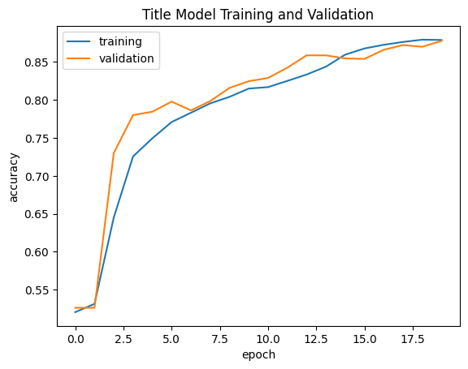
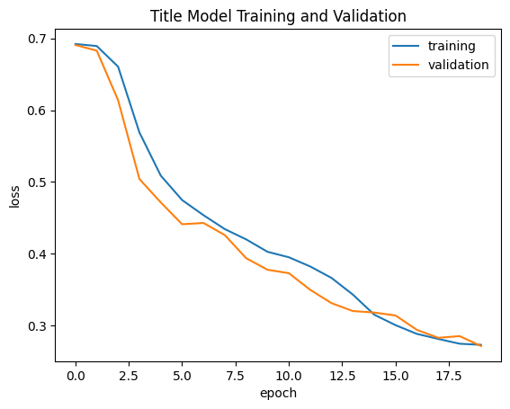
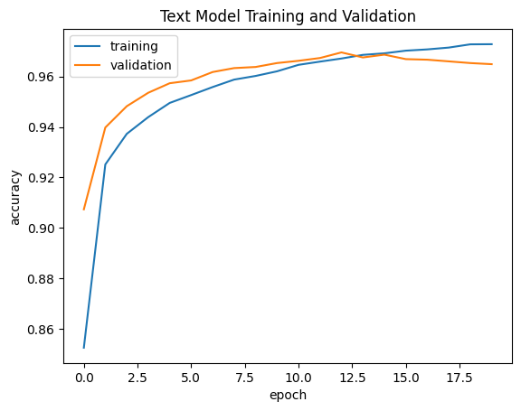
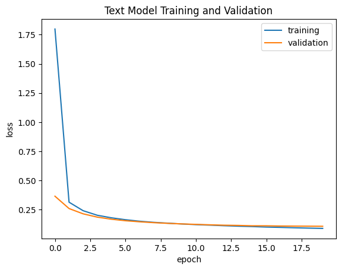
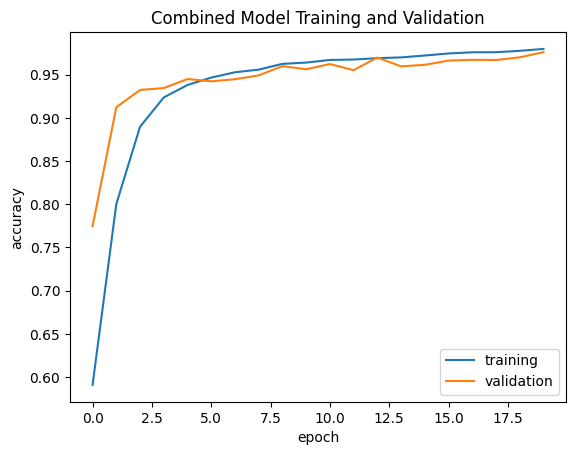
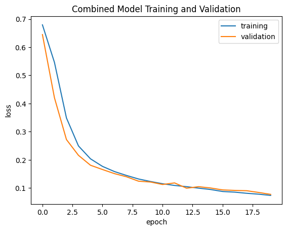

import pandas as pd
import matplotlib.pyplot as plt
from nltk.corpus import stopwords
import tensorflow as tf
from tensorflow import keras
from keras import layers, models, losses
from keras.layers import TextVectorization
from keras import utils
import regex as re
import string
from sklearn.decomposition import PCA
import plotly.express as px
import numpy as np
import plotly.io as pio
pio.renderers.default="iframe"Working with Keras to Classify Text
Begin by first importing the necessary libraries.
Acquire Training Data
Next, you need to import the data that you will be training your model to evaluate.
train_url = "https://github.com/PhilChodrow/PIC16b/blob/master/datasets/fake_news_train.csv?raw=true"Convert the data into a pandas data frame to visualize the contents and work with it easier.
df = pd.read_csv(train_url)df| Unnamed: 0 | title | text | fake | |
|---|---|---|---|---|
| 0 | 17366 | Merkel: Strong result for Austria's FPO 'big c... | German Chancellor Angela Merkel said on Monday... | 0 |
| 1 | 5634 | Trump says Pence will lead voter fraud panel | WEST PALM BEACH, Fla.President Donald Trump sa... | 0 |
| 2 | 17487 | JUST IN: SUSPECTED LEAKER and “Close Confidant... | On December 5, 2017, Circa s Sara Carter warne... | 1 |
| 3 | 12217 | Thyssenkrupp has offered help to Argentina ove... | Germany s Thyssenkrupp, has offered assistance... | 0 |
| 4 | 5535 | Trump say appeals court decision on travel ban... | President Donald Trump on Thursday called the ... | 0 |
| ... | ... | ... | ... | ... |
| 22444 | 10709 | ALARMING: NSA Refuses to Release Clinton-Lynch... | If Clinton and Lynch just talked about grandki... | 1 |
| 22445 | 8731 | Can Pence's vow not to sling mud survive a Tru... | () - In 1990, during a close and bitter congre... | 0 |
| 22446 | 4733 | Watch Trump Campaign Try To Spin Their Way Ou... | A new ad by the Hillary Clinton SuperPac Prior... | 1 |
| 22447 | 3993 | Trump celebrates first 100 days as president, ... | HARRISBURG, Pa.U.S. President Donald Trump hit... | 0 |
| 22448 | 12896 | TRUMP SUPPORTERS REACT TO DEBATE: “Clinton New... | MELBOURNE, FL is a town with a population of 7... | 1 |
22449 rows × 4 columns
Make a Dataset
In order to work with this data, we need to be able to extract the important words and remove any excessive spaces in order to evaluate it to the best of our abilities.
def make_dataset(df):
#import stop words
stop = stopwords.words('english')
titles = df['title'].copy()
texts = df['text'].copy()
#convert to lowercase and remove stop words
df['title'] = titles.apply(lambda title: ' '.join([word.lower() for word in title.split() if word.lower() not in stop]))
df['text'] = texts.apply(lambda text: ' '.join([word.lower() for word in text.split() if word.lower() not in stop]))
#batch data to improve efficiency and convert to tensorflow dataset
data = tf.data.Dataset.from_tensor_slices(((df["title"], df["text"]), df["fake"]))
return data.batch(100)data = make_dataset(df)Once we have our tensorflow dataset, we need to be able to divide the data into the training data and the validation data using the following code.
data = data.shuffle(len(data), reshuffle_each_iteration=False)
#set the validation data size to be 20% of the dataset
val_size = int(0.2 * len(data))
val = data.take(val_size)
train = data.skip(val_size)
len(train), len(val)(180, 45)Base Rate
unbactched_data = data.unbatch()
num_fake = int(unbactched_data.filter(lambda x, y: tf.equal(y, 0)).cardinality())
num_real = int(unbactched_data.filter(lambda x, y: tf.equal(y, 1)).cardinality())
total = num_fake + num_real
base_rate = max(num_fake, num_real) / total
print("Base Rate: ", base_rate)Base Rate: 0.5The base rate of the model is 50% because there are same number of actual fake and actual real new pieces within the dataset. Therefore, if the algorithm were to assume the text is either all fake or all real, it would be accurate 50% of the time.
The next step is to format the text within the dataset by standardizing it. This means that we remove any unneccessary punctuation and convert all of the text to lowercase. Then, we can create a text vectorization layer that will essentially calculate the frequency of tokens within the text and make a vector out of that. One interesting thing is that for this model, we will be using two inputs to predict our output so the formatting of the code is modified accordingly.
size_vocabulary = 2000
sequence_length = 500
def standardization(input_data):
lowercase = tf.strings.lower(input_data)
no_punctuation = tf.strings.regex_replace(lowercase,
'[%s]' % re.escape(string.punctuation),'')
return no_punctuation
vectorize_layer = TextVectorization(
standardize=standardization,
max_tokens=size_vocabulary,
output_mode='int',
output_sequence_length=sequence_length)
vectorize_layer.adapt(train.map(lambda x, y: tf.concat([x[0], x[1]], axis=0)))
def vectorize_headline(title, text, val):
title_vec = vectorize_layer(title)
text_vec = vectorize_layer(text)
return (title_vec, text_vec), val
#map the data to the vectorization
train_vec = train.map(lambda x, y: vectorize_headline(x[0], x[1], y))
val_vec = val.map(lambda x, y: vectorize_headline(x[0], x[1], y))Create Models
#input layer
title_input = layers.Input(shape=(sequence_length,), name = "title_input")
#embedding layer to convert frequencies to real numbers
x = layers.Embedding(input_dim=size_vocabulary, output_dim=3, name="embedding")(title_input)
#calculates the average of the array
x = layers.GlobalAveragePooling1D()(x)
#dense and dropout layers to reduce overfitting and set output size
x = layers.Dense(30)(x)
x = layers.Dropout(0.2)(x)
output = layers.Dense(1, activation = "sigmoid")(x)
#build model
title_model = models.Model(inputs=title_input, outputs=output, name="title_model")
#compile model with loss and optimizer
title_model.compile(loss=losses.BinaryCrossentropy(from_logits=False),
optimizer='adam',
metrics=['accuracy'])
#callback to stop if the epochs are not improving
callback = keras.callbacks.EarlyStopping(monitor='val_loss', patience=5)
val_title = val_vec.map(lambda x, y: (x[0], y))
title_vec = train_vec.map(lambda x, y: (x[0], y))
#fit the model
title_history = title_model.fit(title_vec, epochs = 20, validation_data = val_title,
callbacks=[callback])Epoch 1/20
180/180 ━━━━━━━━━━━━━━━━━━━━ 4s 16ms/step - accuracy: 0.5206 - loss: 0.6923 - val_accuracy: 0.5262 - val_loss: 0.6908
Epoch 2/20
180/180 ━━━━━━━━━━━━━━━━━━━━ 3s 18ms/step - accuracy: 0.5278 - loss: 0.6904 - val_accuracy: 0.5262 - val_loss: 0.6829
Epoch 3/20
180/180 ━━━━━━━━━━━━━━━━━━━━ 3s 16ms/step - accuracy: 0.6066 - loss: 0.6748 - val_accuracy: 0.7300 - val_loss: 0.6139
Epoch 4/20
180/180 ━━━━━━━━━━━━━━━━━━━━ 5s 14ms/step - accuracy: 0.7088 - loss: 0.5958 - val_accuracy: 0.7800 - val_loss: 0.5040
Epoch 5/20
180/180 ━━━━━━━━━━━━━━━━━━━━ 7s 27ms/step - accuracy: 0.7529 - loss: 0.5124 - val_accuracy: 0.7844 - val_loss: 0.4715
Epoch 6/20
180/180 ━━━━━━━━━━━━━━━━━━━━ 4s 20ms/step - accuracy: 0.7691 - loss: 0.4782 - val_accuracy: 0.7978 - val_loss: 0.4411
Epoch 7/20
180/180 ━━━━━━━━━━━━━━━━━━━━ 4s 20ms/step - accuracy: 0.7813 - loss: 0.4538 - val_accuracy: 0.7862 - val_loss: 0.4429
Epoch 8/20
180/180 ━━━━━━━━━━━━━━━━━━━━ 5s 27ms/step - accuracy: 0.7922 - loss: 0.4377 - val_accuracy: 0.7984 - val_loss: 0.4260
Epoch 9/20
180/180 ━━━━━━━━━━━━━━━━━━━━ 3s 14ms/step - accuracy: 0.8010 - loss: 0.4225 - val_accuracy: 0.8158 - val_loss: 0.3938
Epoch 10/20
180/180 ━━━━━━━━━━━━━━━━━━━━ 7s 24ms/step - accuracy: 0.8129 - loss: 0.4033 - val_accuracy: 0.8247 - val_loss: 0.3777
Epoch 11/20
180/180 ━━━━━━━━━━━━━━━━━━━━ 5s 24ms/step - accuracy: 0.8167 - loss: 0.3929 - val_accuracy: 0.8289 - val_loss: 0.3729
Epoch 12/20
180/180 ━━━━━━━━━━━━━━━━━━━━ 5s 23ms/step - accuracy: 0.8229 - loss: 0.3806 - val_accuracy: 0.8424 - val_loss: 0.3498
Epoch 13/20
180/180 ━━━━━━━━━━━━━━━━━━━━ 7s 32ms/step - accuracy: 0.8323 - loss: 0.3648 - val_accuracy: 0.8587 - val_loss: 0.3312
Epoch 14/20
180/180 ━━━━━━━━━━━━━━━━━━━━ 7s 14ms/step - accuracy: 0.8444 - loss: 0.3419 - val_accuracy: 0.8587 - val_loss: 0.3202
Epoch 15/20
180/180 ━━━━━━━━━━━━━━━━━━━━ 4s 23ms/step - accuracy: 0.8571 - loss: 0.3192 - val_accuracy: 0.8547 - val_loss: 0.3181
Epoch 16/20
180/180 ━━━━━━━━━━━━━━━━━━━━ 4s 15ms/step - accuracy: 0.8646 - loss: 0.3051 - val_accuracy: 0.8540 - val_loss: 0.3140
Epoch 17/20
180/180 ━━━━━━━━━━━━━━━━━━━━ 5s 15ms/step - accuracy: 0.8690 - loss: 0.2922 - val_accuracy: 0.8660 - val_loss: 0.2939
Epoch 18/20
180/180 ━━━━━━━━━━━━━━━━━━━━ 4s 21ms/step - accuracy: 0.8741 - loss: 0.2845 - val_accuracy: 0.8722 - val_loss: 0.2829
Epoch 19/20
180/180 ━━━━━━━━━━━━━━━━━━━━ 3s 15ms/step - accuracy: 0.8766 - loss: 0.2775 - val_accuracy: 0.8700 - val_loss: 0.2853
Epoch 20/20
180/180 ━━━━━━━━━━━━━━━━━━━━ 3s 14ms/step - accuracy: 0.8761 - loss: 0.2743 - val_accuracy: 0.8778 - val_loss: 0.2715utils.plot_model(title_model, "title_model.png",
show_shapes=True,
show_layer_names=True)
fig.show()plt.plot(title_history.history["accuracy"], label = "training")
plt.plot(title_history.history["val_accuracy"], label = "validation")
plt.gca().set(xlabel = "epoch", ylabel = "accuracy")
plt.title("Title Model Training and Validation")
plt.legend()
fig.show()
plt.plot(title_history.history["loss"], label = "training")
plt.plot(title_history.history["val_loss"], label = "validation")
plt.gca().set(xlabel = "epoch", ylabel = "loss")
plt.title("Title Model Training and Validation")
plt.legend()
fig.show()
#input layer
text_input = layers.Input(shape=(sequence_length,), name = "text_input")
#embedding layer to convert frequencies to real numbers
x = layers.Embedding(input_dim=size_vocabulary, output_dim=3, name="embedding")(text_input)
#layer to convert frequencies to the average of the array
x = layers.GlobalAveragePooling1D()(x)
#dense and dropout layers to reduce the overfitting and choose output size
x = layers.Dense(30)(x)
x = layers.Dropout(0.2)(x)
output = layers.Dense(1, activation = "sigmoid")(x)
#create model
text_model = models.Model(inputs=text_input, outputs=output, name="text_model")
#compile model with loss and optimizer and set metric
text_model.compile(loss=losses.BinaryCrossentropy(from_logits=False),
optimizer='adam',
metrics=['accuracy'])
#callback to stop the process if epoch accuracies do not increase 5 times consecutively
callback = keras.callbacks.EarlyStopping(monitor='val_loss', patience=5)
text_vec = train_vec.map(lambda x, y: (x[1], y))
val_text = val_vec.map(lambda x, y: (x[1], y))
#model fitting
text_history = title_model.fit(text_vec, epochs = 20, validation_data = val_text,
callbacks=[callback])Epoch 1/20
180/180 ━━━━━━━━━━━━━━━━━━━━ 4s 24ms/step - accuracy: 0.7733 - loss: 4.9918 - val_accuracy: 0.9073 - val_loss: 0.3652
Epoch 2/20
180/180 ━━━━━━━━━━━━━━━━━━━━ 4s 19ms/step - accuracy: 0.9259 - loss: 0.3214 - val_accuracy: 0.9398 - val_loss: 0.2595
Epoch 3/20
180/180 ━━━━━━━━━━━━━━━━━━━━ 5s 27ms/step - accuracy: 0.9377 - loss: 0.2400 - val_accuracy: 0.9482 - val_loss: 0.2142
Epoch 4/20
180/180 ━━━━━━━━━━━━━━━━━━━━ 5s 29ms/step - accuracy: 0.9440 - loss: 0.1984 - val_accuracy: 0.9536 - val_loss: 0.1860
Epoch 5/20
180/180 ━━━━━━━━━━━━━━━━━━━━ 8s 15ms/step - accuracy: 0.9511 - loss: 0.1759 - val_accuracy: 0.9573 - val_loss: 0.1681
Epoch 6/20
180/180 ━━━━━━━━━━━━━━━━━━━━ 6s 18ms/step - accuracy: 0.9526 - loss: 0.1597 - val_accuracy: 0.9584 - val_loss: 0.1552
Epoch 7/20
180/180 ━━━━━━━━━━━━━━━━━━━━ 5s 16ms/step - accuracy: 0.9566 - loss: 0.1462 - val_accuracy: 0.9618 - val_loss: 0.1461
Epoch 8/20
180/180 ━━━━━━━━━━━━━━━━━━━━ 3s 15ms/step - accuracy: 0.9586 - loss: 0.1379 - val_accuracy: 0.9633 - val_loss: 0.1386
Epoch 9/20
180/180 ━━━━━━━━━━━━━━━━━━━━ 4s 23ms/step - accuracy: 0.9605 - loss: 0.1302 - val_accuracy: 0.9638 - val_loss: 0.1328
Epoch 10/20
180/180 ━━━━━━━━━━━━━━━━━━━━ 4s 15ms/step - accuracy: 0.9627 - loss: 0.1242 - val_accuracy: 0.9653 - val_loss: 0.1279
Epoch 11/20
180/180 ━━━━━━━━━━━━━━━━━━━━ 5s 16ms/step - accuracy: 0.9656 - loss: 0.1180 - val_accuracy: 0.9662 - val_loss: 0.1238
Epoch 12/20
180/180 ━━━━━━━━━━━━━━━━━━━━ 5s 15ms/step - accuracy: 0.9670 - loss: 0.1144 - val_accuracy: 0.9673 - val_loss: 0.1200
Epoch 13/20
180/180 ━━━━━━━━━━━━━━━━━━━━ 5s 14ms/step - accuracy: 0.9685 - loss: 0.1096 - val_accuracy: 0.9696 - val_loss: 0.1167
Epoch 14/20
180/180 ━━━━━━━━━━━━━━━━━━━━ 6s 18ms/step - accuracy: 0.9698 - loss: 0.1057 - val_accuracy: 0.9676 - val_loss: 0.1150
Epoch 15/20
180/180 ━━━━━━━━━━━━━━━━━━━━ 5s 16ms/step - accuracy: 0.9706 - loss: 0.1027 - val_accuracy: 0.9687 - val_loss: 0.1117
Epoch 16/20
180/180 ━━━━━━━━━━━━━━━━━━━━ 3s 15ms/step - accuracy: 0.9722 - loss: 0.0989 - val_accuracy: 0.9669 - val_loss: 0.1117
Epoch 17/20
180/180 ━━━━━━━━━━━━━━━━━━━━ 5s 15ms/step - accuracy: 0.9725 - loss: 0.0960 - val_accuracy: 0.9667 - val_loss: 0.1096
Epoch 18/20
180/180 ━━━━━━━━━━━━━━━━━━━━ 3s 15ms/step - accuracy: 0.9733 - loss: 0.0928 - val_accuracy: 0.9660 - val_loss: 0.1088
Epoch 19/20
180/180 ━━━━━━━━━━━━━━━━━━━━ 3s 15ms/step - accuracy: 0.9741 - loss: 0.0900 - val_accuracy: 0.9653 - val_loss: 0.1083
Epoch 20/20
180/180 ━━━━━━━━━━━━━━━━━━━━ 5s 25ms/step - accuracy: 0.9749 - loss: 0.0873 - val_accuracy: 0.9649 - val_loss: 0.1075utils.plot_model(text_model, "text_model.png",
show_shapes=True,
show_layer_names=True)
fig.show()plt.plot(text_history.history["accuracy"], label = "training")
plt.plot(text_history.history["val_accuracy"], label = "validation")
plt.gca().set(xlabel = "epoch", ylabel = "accuracy")
plt.title("Text Model Training and Validation")
plt.legend()
fig.show()
plt.plot(text_history.history["loss"], label = "training")
plt.plot(text_history.history["val_loss"], label = "validation")
plt.gca().set(xlabel = "epoch", ylabel = "loss")
plt.title("Text Model Training and Validation")
plt.legend()
fig.show()
#input layers
title_input = layers.Input(shape=(sequence_length,), name="title_input")
text_input = layers.Input(shape=(sequence_length,), name="text_input")
#shared embedding layer to convert frequencies to real numbers
shared_embedding = layers.Embedding(input_dim=size_vocabulary, output_dim=3, name="shared_embedding")
#apply embedding layer to both inputs
title_embedded = shared_embedding(title_input)
text_embedded = shared_embedding(text_input)
#pool both layers to find averages of the arrays
title_pooled = layers.GlobalAveragePooling1D()(title_embedded)
text_pooled = layers.GlobalAveragePooling1D()(text_embedded)
#concatentate layers to combine
x = layers.concatenate([title_pooled, text_pooled])
#dense and dropout layers to reduce overfitting and choose output shape
x = layers.Dense(30, activation='relu')(x)
x = layers.Dropout(0.2)(x)
output = layers.Dense(1, activation='sigmoid')(x)
#create model
combined_model = models.Model(inputs=[title_input, text_input], outputs=output, name="combined_model")
#compile with loss and optimizers
combined_model.compile(loss=losses.BinaryCrossentropy(from_logits=False),
optimizer='adam',
metrics=['accuracy'])
#callbakc to stop if consecutive val loss decreasing
callback = keras.callbacks.EarlyStopping(monitor='val_loss', patience=5)
#fit model
history = combined_model.fit(train_vec, epochs = 20, validation_data = val_vec,
callbacks=[callback])Epoch 1/20
180/180 ━━━━━━━━━━━━━━━━━━━━ 7s 27ms/step - accuracy: 0.5500 - loss: 0.6881 - val_accuracy: 0.7747 - val_loss: 0.6449
Epoch 2/20
180/180 ━━━━━━━━━━━━━━━━━━━━ 4s 19ms/step - accuracy: 0.7637 - loss: 0.5990 - val_accuracy: 0.9122 - val_loss: 0.4206
Epoch 3/20
180/180 ━━━━━━━━━━━━━━━━━━━━ 3s 19ms/step - accuracy: 0.8750 - loss: 0.3874 - val_accuracy: 0.9322 - val_loss: 0.2719
Epoch 4/20
180/180 ━━━━━━━━━━━━━━━━━━━━ 5s 26ms/step - accuracy: 0.9198 - loss: 0.2635 - val_accuracy: 0.9344 - val_loss: 0.2160
Epoch 5/20
180/180 ━━━━━━━━━━━━━━━━━━━━ 4s 19ms/step - accuracy: 0.9357 - loss: 0.2115 - val_accuracy: 0.9449 - val_loss: 0.1808
Epoch 6/20
180/180 ━━━━━━━━━━━━━━━━━━━━ 4s 19ms/step - accuracy: 0.9462 - loss: 0.1808 - val_accuracy: 0.9422 - val_loss: 0.1656
Epoch 7/20
180/180 ━━━━━━━━━━━━━━━━━━━━ 4s 24ms/step - accuracy: 0.9522 - loss: 0.1614 - val_accuracy: 0.9447 - val_loss: 0.1509
Epoch 8/20
180/180 ━━━━━━━━━━━━━━━━━━━━ 4s 19ms/step - accuracy: 0.9564 - loss: 0.1465 - val_accuracy: 0.9491 - val_loss: 0.1398
Epoch 9/20
180/180 ━━━━━━━━━━━━━━━━━━━━ 3s 19ms/step - accuracy: 0.9636 - loss: 0.1333 - val_accuracy: 0.9598 - val_loss: 0.1241
Epoch 10/20
180/180 ━━━━━━━━━━━━━━━━━━━━ 4s 24ms/step - accuracy: 0.9649 - loss: 0.1247 - val_accuracy: 0.9562 - val_loss: 0.1212
Epoch 11/20
180/180 ━━━━━━━━━━━━━━━━━━━━ 4s 20ms/step - accuracy: 0.9689 - loss: 0.1147 - val_accuracy: 0.9622 - val_loss: 0.1124
Epoch 12/20
180/180 ━━━━━━━━━━━━━━━━━━━━ 4s 19ms/step - accuracy: 0.9690 - loss: 0.1080 - val_accuracy: 0.9551 - val_loss: 0.1180
Epoch 13/20
180/180 ━━━━━━━━━━━━━━━━━━━━ 4s 19ms/step - accuracy: 0.9694 - loss: 0.1045 - val_accuracy: 0.9698 - val_loss: 0.0992
Epoch 14/20
180/180 ━━━━━━━━━━━━━━━━━━━━ 5s 20ms/step - accuracy: 0.9705 - loss: 0.1009 - val_accuracy: 0.9596 - val_loss: 0.1046
Epoch 15/20
180/180 ━━━━━━━━━━━━━━━━━━━━ 3s 19ms/step - accuracy: 0.9735 - loss: 0.0938 - val_accuracy: 0.9613 - val_loss: 0.1000
Epoch 16/20
180/180 ━━━━━━━━━━━━━━━━━━━━ 4s 24ms/step - accuracy: 0.9752 - loss: 0.0879 - val_accuracy: 0.9662 - val_loss: 0.0931
Epoch 17/20
180/180 ━━━━━━━━━━━━━━━━━━━━ 4s 19ms/step - accuracy: 0.9766 - loss: 0.0856 - val_accuracy: 0.9671 - val_loss: 0.0914
Epoch 18/20
180/180 ━━━━━━━━━━━━━━━━━━━━ 3s 19ms/step - accuracy: 0.9770 - loss: 0.0811 - val_accuracy: 0.9669 - val_loss: 0.0903
Epoch 19/20
180/180 ━━━━━━━━━━━━━━━━━━━━ 4s 24ms/step - accuracy: 0.9780 - loss: 0.0779 - val_accuracy: 0.9700 - val_loss: 0.0841
Epoch 20/20
180/180 ━━━━━━━━━━━━━━━━━━━━ 4s 20ms/step - accuracy: 0.9816 - loss: 0.0734 - val_accuracy: 0.9760 - val_loss: 0.0773utils.plot_model(combined_model, "combined_model.png",
show_shapes=True,
show_layer_names=True)
fig.show()plt.plot(history.history["accuracy"], label = "training")
plt.plot(history.history["val_accuracy"], label = "validation")
plt.gca().set(xlabel = "epoch", ylabel = "accuracy")
plt.title("Combined Model Training and Validation")
plt.legend()
fig.show()
plt.plot(history.history["loss"], label = "training")
plt.plot(history.history["val_loss"], label = "validation")
plt.gca().set(xlabel = "epoch", ylabel = "loss")
plt.title("Combined Model Training and Validation")
plt.legend()
fig.show()
Based on the validation accuracies of each of the three models, the third, test and title, model seems to be the best suited for predicting whether an excerpt is fake or real news accurately. The first model, which only considers the title of the piece, has around an 87% validation accuracy rate, and the second, which only considers the text of the piece, has around a 98% validation accuracy. Its validation loss does slightly increase in following epochs at times, unlike the third model, which considers both title and text and also has a 98% validation accuracy. Addtionally, looking at the graphs, there is most similarity between the the data of the joined model in terms of validation and training. Therefore, it seems as though the third model, which considers both title and text for its machine learning, would produce the most accurate results when predicting whether an article has fake or real news. In order to produce each of these models, I began by standardizing all of the text using a Text Vectorization Layer which essentially normalizes the values within the dataset (removes punctuation, uppercase letters, and any other awry features). It splits the different words into tokens and maps them to numerical values to use for the model. Then, I used an embedding layer that covert the integers representing frequency values into a more informative vector of real numbers. Next, I used a Global Pooling 1D layer in order to take the average of the data along the axis. Finally, I use Dropout layers to regulate the data and prevent overfitting as well as Dense layers to control the output shapes of the model. I tinkered with the order of the layers, the number of them, and their output shapes till I was satisfied with the results. This format was followed for all three models with the second and third consistently achieving over a 97% validation accuracy rate.
Model Evaluation
Now that we have chosen which model we want to use, we need to ensure that it performs well on unseen testing data. We import the data the same way we did the training dataset.
test_url = "https://github.com/PhilChodrow/PIC16b/blob/master/datasets/fake_news_test.csv?raw=true"test_df = pd.read_csv(test_url)test_data = make_dataset(test_df)test_vec = test_data.map(lambda x, y: vectorize_headline(x[0], x[1], y))combined_model.evaluate(test_vec)225/225 ━━━━━━━━━━━━━━━━━━━━ 2s 9ms/step - accuracy: 0.9736 - loss: 0.0847[0.08566036075353622, 0.9737182259559631]Evaluating the model on the testing data shows that the accuracy is consistent.
The combined model had a 97.4% accuracy rate when tested on unseen data.
Embedding Visualization
Embeddings allows us to represent a word through vectors and see how different words relate to each other.We save the weights of our model which are parameters which were trained during the ML fitting and also the vocabulary from the text vectorization layer.
weights = combined_model.get_layer('shared_embedding').get_weights()[0]
vocab = vectorize_layer.get_vocabulary()
weights.shape(2000, 3)We can create a visualization using principal component analysis to convert our data into a 2D representation.
pca = PCA(n_components=2)
weights = pca.fit_transform(weights)I chose to highlight five words I would consider to be of importance within this specific exercise. Then, we create a data frame from our results.
important_words = words_to_annotate = ["trump", "biden", "republican", "election", "government"]
embedding_df = pd.DataFrame({
'word' : vocab,
'x0' : weights[:,0],
'x1' : weights[:,1],
"category": ["Important" if word in important_words else "Other" for word in vocab]
})
embedding_df.head(20)| word | x0 | x1 | category | |
|---|---|---|---|---|
| 0 | -0.042562 | 0.250676 | Other | |
| 1 | [UNK] | -0.202805 | -0.938113 | Other |
| 2 | said | 10.617694 | -0.206343 | Other |
| 3 | trump | -2.352648 | -0.697172 | Important |
| 4 | us | 2.699094 | 0.713777 | Other |
| 5 | would | 0.036404 | -0.004275 | Other |
| 6 | president | 1.633650 | -0.104370 | Other |
| 7 | people | 0.339838 | -0.186366 | Other |
| 8 | one | -2.027555 | -0.131373 | Other |
| 9 | new | 1.236912 | -0.007485 | Other |
| 10 | state | 0.056427 | 0.320657 | Other |
| 11 | also | -0.392352 | 0.088901 | Other |
| 12 | house | 1.814622 | 0.357864 | Other |
| 13 | donald | 2.006095 | -0.204986 | Other |
| 14 | clinton | -0.740504 | -0.221099 | Other |
| 15 | states | 1.421865 | 0.008737 | Other |
| 16 | government | 3.344662 | 0.278489 | Important |
| 17 | obama | -5.966759 | -0.263974 | Other |
| 18 | republican | 3.575045 | -0.194854 | Important |
| 19 | could | 0.462510 | -0.169204 | Other |
Using plotly we can create a scatter plot of our data.
fig = px.scatter(embedding_df,
x = "x0",
y = "x1",
color="category",
opacity=0.8,
size = np.ones(len(embedding_df)),
size_max = 10,
hover_name = "word")
fig.show()The location of each of the points are based on the x0 and x1 values which are the principle components. They represent how close words are to each other in terms of context and their estimated relations. It makes sense that Biden and Trump as our presidents but not directly next to each other due to party differences. It also make sense that election, Republican and government are close given they are related.